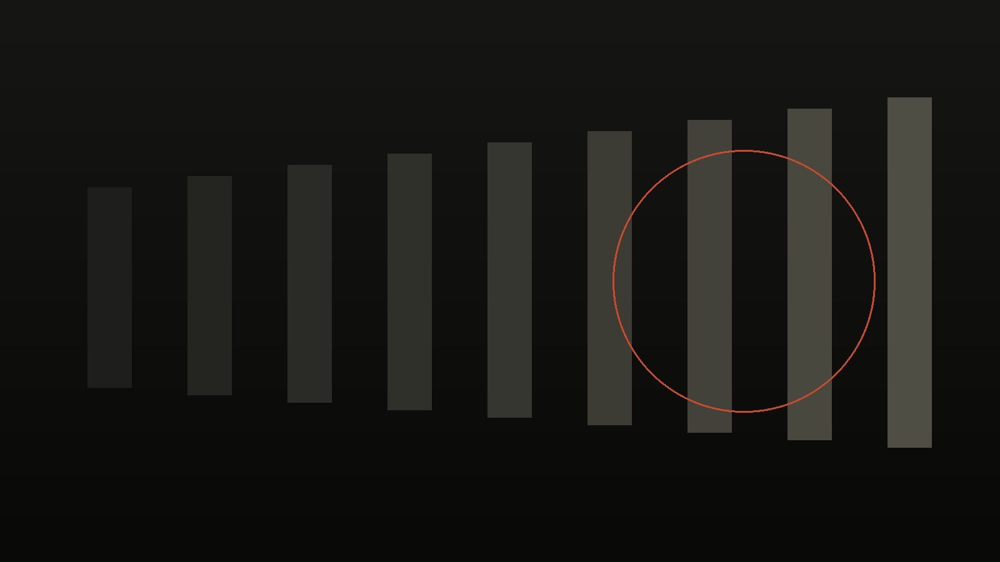
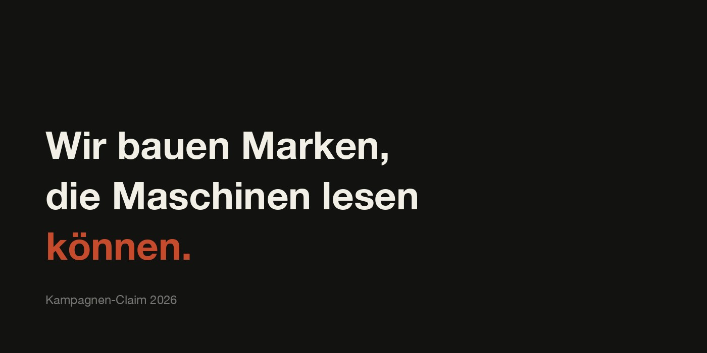
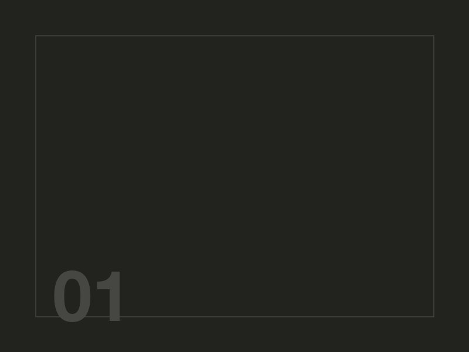
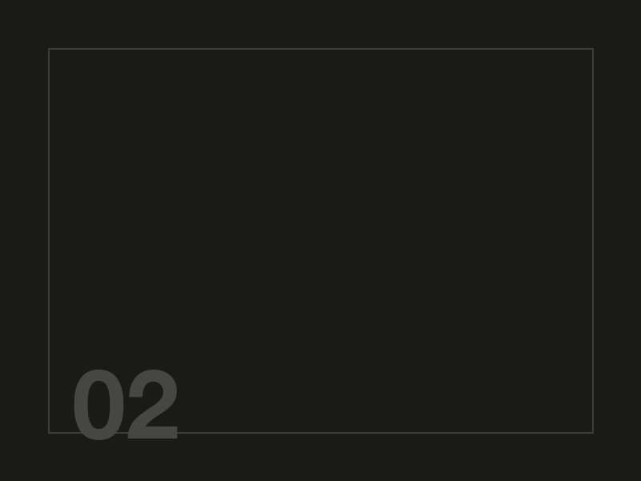
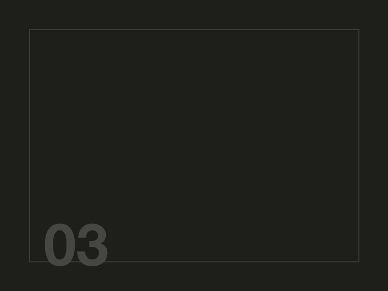
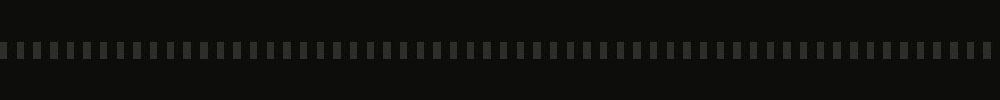

Eins: Bild mit beschreibendem Alternativtext

Kommt an, als genau dieser eine Satz. Alles Weitere, Komposition, Farbigkeit, Wirkung, kommt nicht an.
Zwei: Claim, der als Bild gesetzt ist

Der häufigste Fall in der Praxis. Der wichtigste Satz der Seite steht im Bild, nicht im Text. Der Alternativtext lautet „Kampagnenmotiv". Formal ist das Bild damit beschriftet, der Claim selbst kommt trotzdem nirgends an.
Drei: Bildstrecke ohne Alternativtexte



Drei Bilder ohne alt-Attribut. Im Baum stehen sie als namenlose Knoten. Ein System weiß, dass dort etwas ist, aber nicht, was.
Vier: Dekoration, korrekt versteckt

Ein leeres alt plus role="presentation". Das ist kein Fehler, sondern die richtige Behandlung für reinen Schmuck. Das Bild verschwindet absichtlich.
Fünf: Hintergrundbild über CSS
Dieser Absatz liegt auf einem Bild, das nur im Stylesheet steht.
Ein Bild, das gar nicht im Dokument vorkommt. Es gibt keinen Knoten, keinen Namen, keine Möglichkeit, es zu benennen. Für jede Maschine ist hier nichts.
Sechs: Bild als Link, ohne Namen
Der schlechteste Fall. Das Bild ist bedienbar, aber unbenannt. In der DOM-Ansicht steht ein Link ohne Beschriftung, und ein Agent kann nur raten, wohin er führt.
Sieben: Symbol als SVG, ohne Titel
Ein SVG ohne title ist für eine Maschine leer. Mit aria-hidden ist das ehrlich, ohne wäre es ein stiller Verlust.
Was die Gegenüberstellung zeigt
Von sieben Bildfällen auf dieser Seite kommt einer mit seiner Bedeutung an. Einer verschwindet absichtlich und richtig. Fünf gehen verloren.
Das ist keine schlecht gebaute Seite, sondern eine normale. Die Fälle hier sind der Alltag: Claims in Bildern, Bildstrecken ohne Beschriftung, Hintergründe im Stylesheet, verlinkte Bilder ohne Namen. Wer eine Marke visuell führt, führt sie zu einem großen Teil außerhalb dessen, was Maschinen erreichen.
Der Schluss daraus ist nicht, jedes Bild ausführlich zu beschreiben. Alternativtext soll funktional sein, nicht erschöpfend. Der Schluss ist, dass tragende Aussagen nicht ausschließlich im Bild stehen dürfen. Was gelten soll, muss auch als Text existieren.
Zur Gegenprobe: diese Seite in der Maschinensicht öffnen und im Seitenwähler „Bildseite" auswählen.